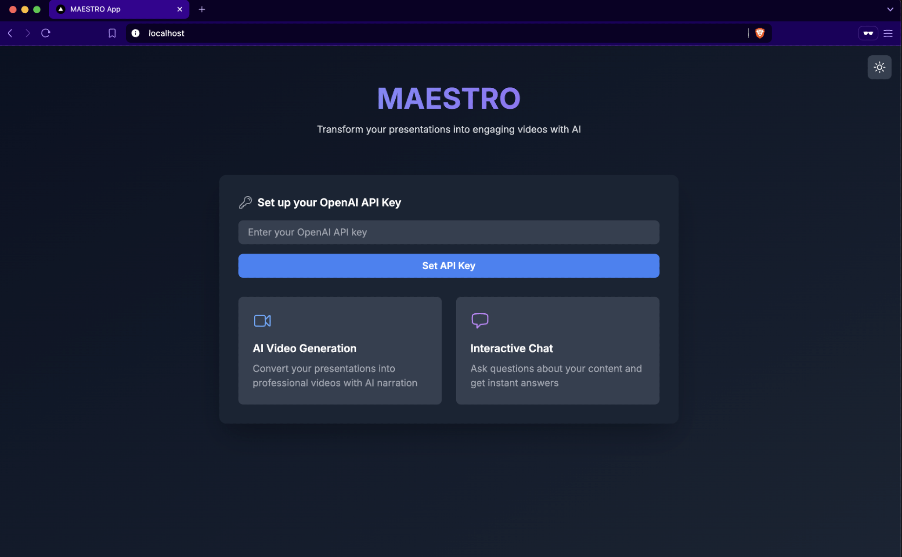

MAESTRO (Multi-modal AI Educational System for Teaching and Resource Organization) is a research platform built at Fordham University's Educational Data Mining Lab. An instructor provides a topic or document; MAESTRO produces a complete video lecture with synthesized narration, synchronized slides, and an embeddable QA bot that students can query about the lecture content.
The platform is live at erdos.dsm.fordham.edu and is actively used in Fordham courses.
OpenAI GPT generates a structured lecture script from the input topic/document
PlayHT converts the script to natural-sounding audio via neural text-to-speech
Key points extracted and rendered as visual slides matched to script segments
FFmpeg synchronizes audio + slides into a final MP4 lecture video
LangChain + OpenAI embeddings index the transcript for interactive student Q&A
Students can ask questions about any lecture using a chatbot that retrieves relevant transcript segments and answers with GPT: grounded in the actual lecture content, not hallucinations.
Instructors can edit the generated script before rendering, adjust voice style, choose slide templates, and set the lecture's depth level (introductory / intermediate / advanced).
All lecture transcripts, embeddings, and metadata stored in MongoDB for fast retrieval and QA indexing. Supports multiple concurrent courses and student sessions.
Part of active research in Educational Data Mining. The platform generates learning data (click patterns, QA logs) that feeds back into EDM research on student engagement and comprehension.
As Graduate Research Assistant at the Fordham EDM Lab (Aug 2024–present), I led the MAESTRO project, including: